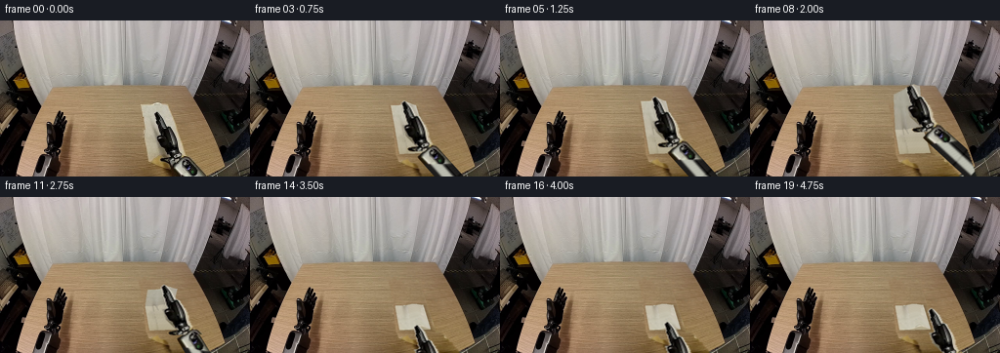
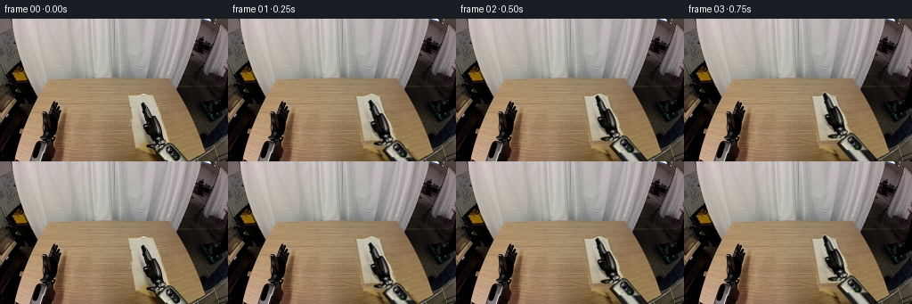

CODING AGENTS AS PIXEL WORLD MODELS
traex/GPT-6.1-Sol · common50_0030
点击播放 · 原生 RGB 像素
逐轮保存的候选
回放视频、检查图与代码变化。
每份候选均可单独播放。实际图片检查记录在下方工具轨迹中。
候选 01播放与检查图
点击播放 · 原生 RGB 像素


展开代码变化
--- 上一保存版本
+++ 本次保存版本
@@ -0,0 +1,338 @@
+from pathlib import Path
+import math
+import numpy as np
+from PIL import Image, ImageDraw, ImageFilter
+import artifact_io
+
+ROOT = Path(__file__).resolve().parent
+W,H = 256,160
+S=3
+ORIG=np.asarray(Image.open(ROOT/'first_frame.png').convert('RGB'))
+rng=np.random.default_rng(4)
+
+def polygon_mask(points, scale=1):
+ m=Image.new('L',(W*scale,H*scale))
+ ImageDraw.Draw(m).polygon([(x*scale,y*scale) for x,y in points],fill=255)
+ return m
+
+def sample(a,x,y):
+ x=np.clip(x,0,a.shape[1]-1.001); y=np.clip(y,0,a.shape[0]-1.001)
+ ix=x.astype(int); iy=y.astype(int); fx=(x-ix)[...,None]; fy=(y-iy)[...,None]
+ return (a[iy,ix]*(1-fx)*(1-fy)+a[iy,ix+1]*fx*(1-fy)+a[iy+1,ix]*(1-fx)*fy+a[iy+1,ix+1]*fx*fy)
+
+# Exact silhouette of the right end effector in the source RGB image.
+rows={93:(159,161),94:(158,163),95:(157,164),96:(157,165),97:(157,166),98:(158,167),99:(158,168),100:(158,169),101:(159,169),102:(159,170),103:(159,170),104:(159,171),105:(160,171),106:(160,172),107:(160,172),108:(161,174),109:(161,176),110:(161,177),111:(162,177),112:(162,178),113:(162,178),114:(162,179),115:(163,180),116:(163,180),117:(162,181),118:(158,182),119:(158,182),120:(159,183),121:(159,183),122:(159,184),123:(160,184),124:(160,184),125:(160,185),126:(161,185),127:(161,185),128:(161,185),129:(162,185),130:(163,185),131:(164,186),132:(165,186),133:(166,187),134:(167,187),135:(168,188),136:(169,189),137:(170,188),138:(171,188),139:(172,189),140:(167,194),141:(164,195),142:(163,197),143:(164,198),144:(165,199),145:(169,200),146:(171,201),147:(172,202),148:(173,202),149:(173,203),150:(173,205),151:(174,206),152:(174,206),153:(174,207),154:(174,208),155:(175,209),156:(176,210),157:(176,211),158:(176,212),159:(176,213)}
+armmask=np.zeros((H,W),np.uint8)
+for y,(a,b) in rows.items():
+ armmask[y,a:b+1]=255
+ armmask[y,a]=140; armmask[y,b]=140
+# Fabric's original irregular perimeter, including the little folded rim.
+cloth_outline=[(143,87),(148,85.8),(154,86),(157,84.3),(163,83.5),(168,86),(171,87),(174,94),(177,102),(180,112),(183,124),(186,134),(186,138),(173,139),(163,140),(153,142),(150,135),(149,124),(148,115),(148,105),(146,96)]
+clothmask=np.array(polygon_mask(cloth_outline))
+# Reconstruct only the tabletop hidden by the two moving objects. All other
+# pixels, including the left arm, backdrop, and table border, remain untouched.
+hole=np.maximum(clothmask,armmask)
+remove=Image.fromarray(hole).filter(ImageFilter.MaxFilter(3)).filter(ImageFilter.GaussianBlur(.55))
+remove_np=np.asarray(remove)/255.
+orig=ORIG.astype(float)
+models=np.zeros((H,W,3),float)
+X=np.arange(W)
+for y in range(H):
+ if y<80:
+ models[y]=orig[y]
+ continue
+ right=min(219,int(197+(y-80)*.34))
+ xx=np.arange(93,right)
+ ok=(hole[y,xx]==0)
+ xx=xx[ok]
+ vals=orig[y,xx]
+ ok=(vals[:,0]-vals[:,2]>39)&(vals.mean(1)>65)
+ xx=xx[ok]; vals=vals[ok]
+ if len(xx)>15:
+ # A low-order illumination profile preserves wood's warm coloration.
+ z=np.stack([np.ones(len(xx)),xx-155],axis=1)
+ co=np.linalg.lstsq(z,vals,rcond=None)[0]
+ models[y]=co[0]+(X[:,None]-155)*co[1]
+ else:
+ models[y]=models[y-1]
+# Source-neighbor texture cloning with compensation for illumination.
+base=orig.copy()
+for y in range(80,H):
+ for x in range(140,216):
+ donor=x-47
+ val=orig[y,donor]+models[y,x]-models[y,donor]
+ a=remove_np[y,x]
+ base[y,x]=base[y,x]*(1-a)+val*a
+base=np.clip(base,0,255).astype(np.uint8)
+
+# An RGB cloth atlas reconstructed from the exposed same-row fabric. The
+# detailed source weave is retained, rather than replacing it with flat paint.
+NU,NV=80,128
+uu,vv=np.meshgrid(np.linspace(0,1,NU),np.linspace(0,1,NV))
+def cloth_source(u,v):
+ x=144+9*v+(26+6*v)*u
+ top=87-3*np.exp(-((u-.67)/.20)**2)
+ y=top*(1-v)+(137-u)*v
+ return x,y
+sx,sy=cloth_source(uu,vv)
+atlas=sample(orig,sx,sy)
+for iy in range(NV):
+ v=iy/(NV-1)
+ y=float(sy[iy].mean()); yi=min(158,max(0,round(y)))
+ left=144+9*v
+ # Exposed strip provides row-specific lighting and real fabric microtexture.
+ candidates=[]
+ for x in range(math.ceil(left+1),math.ceil(left+9)):
+ p=orig[yi,x]
+ if armmask[yi,x]<60 and p.mean()>140 and p[0]-p[2]<43:
+ candidates.append(x)
+ if not candidates:
+ candidates=[int(left+3),int(left+4),int(left+5)]
+ row=orig[yi,candidates]
+ mean=np.median(row,axis=0)
+ for ix in range(NU):
+ xx,yy=int(round(sx[iy,ix])),int(round(sy[iy,ix]))
+ p=atlas[iy,ix]
+ visible=(armmask[yy,xx]<60 and p.mean()>145 and p[0]-p[2]<42)
+ if not visible:
+ # Static, deterministic texture in material coordinates.
+ donor=row[(ix*3+iy//3)%len(row)]
+ atlas[iy,ix]=.55*mean+.45*donor+rng.normal(0,.7)
+# Antialiasing of reconstructed texture, with broad natural folds preserved.
+atlas=np.clip(atlas,0,255)
+
+# Photo-textured rigid gripper. Each of its fingers remains a rigid part.
+endmask=armmask.copy(); endmask[145:]=0
+# Avoid carrying tabletop at the wrist corners into the moving photo sprite.
+endmask[140:145]=armmask[140:145]
+bodymask=endmask.copy(); bodymask[:113]=0
+fingermask=endmask.copy(); fingermask[114:]=0
+
+def make_rgba(mask):
+ return Image.fromarray(np.dstack([ORIG,mask]),'RGBA').resize((W*S,H*S),Image.Resampling.BICUBIC)
+BODY=make_rgba(bodymask)
+FINGER=make_rgba(fingermask)
+END=make_rgba(endmask)
+PIVOT=np.array([182.,143.])
+TIP=np.array([160.,96.])
+FINGER_PIVOT=np.array([166.5,113.])
+
+def rot(a):
+ c,s=np.cos(a),np.sin(a)
+ return np.array([[c,-s],[s,c]])
+
+def transform_rgba(sprite,R,t):
+ Ri=R.T
+ q=-Ri@t*S
+ coeff=(Ri[0,0],Ri[0,1],q[0],Ri[1,0],Ri[1,1],q[1])
+ return sprite.transform((W*S,H*S),Image.Transform.AFFINE,coeff,Image.Resampling.BICUBIC)
+
+# A photo-textured, fixed-length forearm with the same metal inset and dark
+# mechanical shell as the reference. The hidden part extends beyond the image.
+L2=64.
+BAS=np.array([262.,183.])
+L1=40.1
+INITIAL_ELBOW=np.array([223.,192.])
+initial_dir=(INITIAL_ELBOW-PIVOT);initial_dir/=np.linalg.norm(initial_dir)
+normal=np.array([-initial_dir[1],initial_dir[0]])
+NL,NT=258,112
+ss,tt=np.meshgrid(np.linspace(0,L2,NL),np.linspace(-14,14,NT))
+source=PIVOT+ss[...,None]*initial_dir+tt[...,None]*normal
+fore=sample(orig,source[...,0],source[...,1])
+# The distal source patch is real RGB. Beyond its image boundary, continue
+# the same rigid shell material with a fixed axial brushed-metal texture.
+noise=rng.normal(0,1.8,(NT,NL))
+for j in range(NT):
+ for i in range(NL):
+ s,t=ss[j,i],tt[j,i]
+ stripe=np.exp(-((t-1.4)/4.7)**6)
+ shade=23+11*np.exp(-(t/10)**2)
+ col=np.array([shade+2,shade+1,shade])
+ col=col*(1-stripe)+np.array([188,189,176])*stripe
+ col+=noise[j,i]+1.6*math.sin(s*2.2+t*.7)
+ # Fine longitudinal borders and two fixed mechanical bands.
+ col-=20*np.exp(-((t+5.3)/.6)**2)
+ col-=18*np.exp(-((s-43)/1.25)**2)
+ if source[j,i,1]>158:
+ blend=np.clip((source[j,i,1]-155)/5,0,1)
+ fore[j,i]=fore[j,i]*(1-blend)+col*blend
+alpha=np.clip((11.5-abs(tt))*2,0,1)*255
+# Narrow rounded end behind the wrist bearing.
+alpha*=np.clip((ss+1)/2,0,1)*np.clip((L2-ss+1)/2,0,1)
+fore=np.dstack([np.clip(fore,0,255),alpha]).astype(np.uint8)
+
+
+def elbow_for(wrist):
+ d=wrist-BAS
+ dist=np.linalg.norm(d)
+ dist=min(dist,L1+L2-.001)
+ d=d/np.linalg.norm(d)
+ a=(L1*L1-L2*L2+dist*dist)/(2*dist)
+ h=math.sqrt(max(0,L1*L1-a*a))
+ c=BAS+a*d
+ n=np.array([-d[1],d[0]])
+ e1=c+h*n;e2=c-h*n
+ return e1 if e1[1]>e2[1] else e2
+
+
+def paste_forearm(canvas,wrist,elbow):
+ unit=(elbow-wrist)/L2
+ n=np.array([-unit[1],unit[0]])
+ # Inverse mapping of image pixels to the fixed-length arm's local texture.
+ a=(NL-1)/L2; b=(NT-1)/28
+ co=(unit[0]*a/S,unit[1]*a/S,-np.dot(unit,wrist)*a,
+ n[0]*b/S,n[1]*b/S,(14-np.dot(n,wrist))*b)
+ patch=Image.fromarray(fore,'RGBA').transform((W*S,H*S),Image.Transform.AFFINE,co,Image.Resampling.BICUBIC)
+ canvas.alpha_composite(patch)
+
+# Local triangle rasterization: geometry and pixel texture only, no renderer.
+def mesh_layer(theta,part,settle=0):
+ nu,nv=22,30
+ u,v=np.meshgrid(np.linspace(0,1,nu),np.linspace(0,.5,nv) if part=='flap' else np.linspace(.5,1,nv))
+ if part=='flap':
+ depth=.5-(.5-v)*np.cos(theta)
+ height=37*np.sin(theta)*(1-2*v)
+ # Small fabric sag, naturally zero at the hinge and final resting state.
+ height-=2.5*np.sin(np.pi*u)*np.sin(np.pi*(1-2*v))*np.sin(theta)
+ else:
+ depth=v;height=np.zeros_like(v)
+ x=144+9*depth+(26+6*depth)*u
+ top_rim=-3*np.exp(-((u-.67)/.20)**2)
+ y=87+50*depth-u*depth+top_rim*(1-v)
+ # The projected fold lifts away from, rather than sliding over, the table.
+ y-=height
+ if part=='flap' and theta>2.8:
+ y-=.65*(theta-2.8)/(.3416)
+ pts=np.stack([x*S,y*S],-1)
+ tex=np.stack([u*(NU-1),v*(NV-1)],-1)
+ rgba=np.zeros((H*S,W*S,4),float)
+ light=1-.15*np.sin(theta) if part=='flap' else 1.
+ if part=='flap' and theta>math.pi/2:
+ light+=.025*(-np.cos(theta))
+ for j in range(nv-1):
+ for i in range(nu-1):
+ for ids in [[(j,i),(j,i+1),(j+1,i+1)],[(j,i),(j+1,i+1),(j+1,i)]]:
+ p=np.array([pts[a,b] for a,b in ids]); uv=np.array([tex[a,b] for a,b in ids])
+ xmin=max(0,int(np.floor(p[:,0].min()))); xmax=min(W*S-1,int(np.ceil(p[:,0].max())))
+ ymin=max(0,int(np.floor(p[:,1].min()))); ymax=min(H*S-1,int(np.ceil(p[:,1].max())))
+ if xmin>xmax or ymin>ymax:continue
+ A=np.stack([p[1]-p[0],p[2]-p[0]],axis=1)
+ if abs(np.linalg.det(A))<1e-5: continue
+ xx,yy=np.meshgrid(np.arange(xmin,xmax+1)+.5,np.arange(ymin,ymax+1)+.5)
+ bc=(np.stack([xx-p[0,0],yy-p[0,1]],-1))@np.linalg.inv(A).T
+ good=(bc[...,0]>=-1e-5)&(bc[...,1]>=-1e-5)&(bc.sum(-1)<=1.00001)
+ puv=uv[0]+bc[...,0,None]*(uv[1]-uv[0])+bc[...,1,None]*(uv[2]-uv[0])
+ col=sample(atlas,puv[...,0],puv[...,1])*light
+ # Weave and low-amplitude wrinkles remain attached to material.
+ vv1=puv[...,1]/(NV-1); uu1=puv[...,0]/(NU-1)
+ wrinkle=(1-settle)*1.4*np.sin(uu1*14+vv1*11)*np.sin(vv1*math.pi)
+ col+=wrinkle[...,None]
+ reg=rgba[ymin:ymax+1,xmin:xmax+1]
+ reg[good,:3]=col[good];reg[good,3]=255
+ return Image.fromarray(np.clip(rgba,0,255).astype(np.uint8),'RGBA')
+
+
+def surface_edge(theta):
+ u=.52;v=0.
+ d=.5-.5*np.cos(theta)
+ height=37*np.sin(theta)
+ x=144+9*d+(26+6*d)*u
+ y=87+50*d-u*d-3*np.exp(-((u-.67)/.20)**2)-height
+ if theta>2.8:y-=.65*(theta-2.8)/.3416
+ return np.array([x,y])
+
+# Five-second action: approach, clamp, elevate, carry, place, release, smooth.
+thetas=[0,0,0,0,0,.12,.37,.72,1.08,1.44,1.80,2.16,2.50,2.84,math.pi,math.pi,math.pi,math.pi,math.pi,math.pi]
+poses=[]
+for k in range(20):
+ th=thetas[k]
+ if k<4:
+ f=k/3;f=f*f*(3-2*f)
+ tip=TIP*(1-f)+surface_edge(0)*f
+ elif k<=15:
+ tip=surface_edge(th)
+ elif k==16:
+ tip=surface_edge(math.pi)+np.array([1,-3.5])
+ elif k==17:
+ tip=np.array([159.7,119.5])
+ elif k==18:
+ tip=np.array([174.5,131.0])
+ else:
+ tip=np.array([185.,117.])
+ # Wrist orientation compensation keeps the gripper itself rigid and steady.
+ angle=math.radians(-2.2*np.sin(th)) if 5<=k<=14 else 0.
+ R=rot(angle)
+ wrist=tip-R@(TIP-PIVOT)
+ poses.append((tip,wrist,R))
+
+frames=[]
+for k in range(20):
+ if k==0:
+ frames.append(ORIG.copy());continue
+ theta=thetas[k]
+ tip,wrist,R=poses[k]
+ canvas=Image.fromarray(base).resize((W*S,H*S),Image.Resampling.BICUBIC).convert('RGBA')
+ # Contact shadows for the cloth, always on the same tabletop plane.
+ sm=Image.new('L',(W*S,H*S));sd=ImageDraw.Draw(sm)
+ sd.polygon([(148*S,111.5*S),(179*S,110.8*S),(187*S,138.3*S),(153*S,139.3*S)],fill=43)
+ if theta<math.pi-.02:
+ depth=.5-.5*math.cos(theta)
+ top=[(144+9*depth,88+50*depth),(170+15*depth,88+49*depth),(179,113),(149,114)]
+ sd.polygon([(x*S,y*S) for x,y in top],fill=int(36*(.55+.45*abs(math.cos(theta)))))
+ sm=sm.filter(ImageFilter.GaussianBlur(1.05*S))
+ shadow=Image.new('RGBA',canvas.size,(45,31,17,0));shadow.putalpha(sm);canvas.alpha_composite(shadow)
+ near=mesh_layer(theta,'near',settle=float(k>=17))
+ canvas.alpha_composite(near)
+ if theta>2.83:
+ # Hairline double-layer edge and a rounded fold crease.
+ seam=Image.new('RGBA',canvas.size);d=ImageDraw.Draw(seam)
+ d.line([(149*S,112.1*S),(177.8*S,111.6*S)],fill=(119,106,80,170),width=2)
+ d.line([(153.3*S,136.7*S),(184.7*S,136.0*S)],fill=(130,115,85,120),width=3)
+ canvas.alpha_composite(seam)
+ flap=mesh_layer(theta,'flap',settle=float(k>=17))
+ canvas.alpha_composite(flap)
+ # Low-amplitude movable arm shadow; height controls diffusion and opacity.
+ sh=Image.new('L',canvas.size);ds=ImageDraw.Draw(sh)
+ height=37*math.sin(theta) if k<15 else (8 if k>=19 else 1)
+ shift=np.array([3.,2.+height*.24])
+ wp=wrist+shift; tp=tip+shift
+ ds.line([tuple(tp*S),tuple(wp*S)],fill=int(46/(1+height*.025)),width=11*S)
+ sh=sh.filter(ImageFilter.GaussianBlur((1.1+height*.04)*S))
+ imsh=Image.new('RGBA',canvas.size,(28,22,15,0));imsh.putalpha(sh);canvas.alpha_composite(imsh)
+ elbow=elbow_for(wrist)
+ # Proximal link is mostly outside the image, but always has the same length.
+ pr=Image.new('RGBA',canvas.size);pd=ImageDraw.Draw(pr)
+ pd.line([tuple(elbow*S),tuple(BAS*S)],fill=(37,38,34,255),width=21*S)
+ pd.line([tuple((elbow+np.array([-2,-1]))*S),tuple((BAS+np.array([-2,-1]))*S)],fill=(120,122,113,255),width=7*S)
+ pd.ellipse(((elbow[0]-10)*S,(elbow[1]-10)*S,(elbow[0]+10)*S,(elbow[1]+10)*S),fill=(27,29,26,255))
+ canvas.alpha_composite(pr)
+ paste_forearm(canvas,wrist,elbow)
+ # Rigid photographic fingers and palm. Closure is a small hinge rotation,
+ # not an elastic warp of the arm or a change of its dimensions.
+ t=wrist-R@PIVOT
+ if k<4 or k>=16:
+ canvas.alpha_composite(transform_rgba(END,R,t))
+ else:
+ close=math.radians(2.0)
+ F=rot(close)
+ Rt=R@F
+ ft=wrist-R@PIVOT+R@(FINGER_PIVOT-F@FINGER_PIVOT)
+ canvas.alpha_composite(transform_rgba(BODY,R,t))
+ canvas.alpha_composite(transform_rgba(FINGER,Rt,ft))
+ out=np.asarray(canvas.convert('RGB').resize((W,H),Image.Resampling.LANCZOS))
+ # Only moving-object regions are touched; preserve the backdrop exactly.
+ # Composite high-resolution action locally onto original RGB to avoid any
+ # global resizing softening, shimmer, camera movement, or border changes.
+ local=Image.new('L',(W,H));ld=ImageDraw.Draw(local)
+ ld.polygon([(138,80),(179,59),(194,68),(215,112),(231,159),(165,159),(142,143)],fill=255)
+ lm=np.asarray(local.filter(ImageFilter.GaussianBlur(.6)))/255.
+ out=np.clip(out*lm[...,None]+ORIG*(1-lm[...,None]),0,255).astype(np.uint8)
+ frames.append(out)
+frames=np.stack(frames)
+artifact_io.save(frames,ROOT)
+print('Saved',frames.shape,frames.dtype)
+print('Frame zero exact:',np.array_equal(frames[0],ORIG))
+print('Tip/wrist/elbow trajectory:')
+for k,(tip,wrist,R) in enumerate(poses):
+ e=elbow_for(wrist)
+ print(k, np.round(tip,1),np.round(wrist,1),np.round(e,1), 'lengths',round(np.linalg.norm(wrist-e),2),round(np.linalg.norm(BAS-e),2))
候选 02播放与检查图
点击播放 · 原生 RGB 像素

展开代码变化
--- 上一保存版本
+++ 本次保存版本
@@ -1,7 +1,7 @@
from pathlib import Path
import math
import numpy as np
-from PIL import Image, ImageDraw, ImageFilter
+from PIL import Image, ImageDraw, ImageFilter, ImageChops
import artifact_io
ROOT = Path(__file__).resolve().parent
@@ -130,8 +130,8 @@
# A photo-textured, fixed-length forearm with the same metal inset and dark
# mechanical shell as the reference. The hidden part extends beyond the image.
L2=64.
-BAS=np.array([262.,183.])
-L1=40.1
+BAS=np.array([261.,180.])
+L1=44.5
INITIAL_ELBOW=np.array([223.,192.])
initial_dir=(INITIAL_ELBOW-PIVOT);initial_dir/=np.linalg.norm(initial_dir)
normal=np.array([-initial_dir[1],initial_dir[0]])
@@ -183,7 +183,7 @@
co=(unit[0]*a/S,unit[1]*a/S,-np.dot(unit,wrist)*a,
n[0]*b/S,n[1]*b/S,(14-np.dot(n,wrist))*b)
patch=Image.fromarray(fore,'RGBA').transform((W*S,H*S),Image.Transform.AFFINE,co,Image.Resampling.BICUBIC)
- canvas.alpha_composite(patch)
+ return patch
# Local triangle rasterization: geometry and pixel texture only, no renderer.
def mesh_layer(theta,part,settle=0):
@@ -272,6 +272,11 @@
theta=thetas[k]
tip,wrist,R=poses[k]
canvas=Image.fromarray(base).resize((W*S,H*S),Image.Resampling.BICUBIC).convert('RGBA')
+ active=remove.resize(canvas.size,Image.Resampling.BICUBIC)
+ def composite(layer):
+ global active
+ canvas.alpha_composite(layer)
+ active=ImageChops.lighter(active,layer.getchannel('A'))
# Contact shadows for the cloth, always on the same tabletop plane.
sm=Image.new('L',(W*S,H*S));sd=ImageDraw.Draw(sm)
sd.polygon([(148*S,111.5*S),(179*S,110.8*S),(187*S,138.3*S),(153*S,139.3*S)],fill=43)
@@ -280,17 +285,17 @@
top=[(144+9*depth,88+50*depth),(170+15*depth,88+49*depth),(179,113),(149,114)]
sd.polygon([(x*S,y*S) for x,y in top],fill=int(36*(.55+.45*abs(math.cos(theta)))))
sm=sm.filter(ImageFilter.GaussianBlur(1.05*S))
- shadow=Image.new('RGBA',canvas.size,(45,31,17,0));shadow.putalpha(sm);canvas.alpha_composite(shadow)
+ shadow=Image.new('RGBA',canvas.size,(45,31,17,0));shadow.putalpha(sm);composite(shadow)
near=mesh_layer(theta,'near',settle=float(k>=17))
- canvas.alpha_composite(near)
+ composite(near)
if theta>2.83:
# Hairline double-layer edge and a rounded fold crease.
seam=Image.new('RGBA',canvas.size);d=ImageDraw.Draw(seam)
d.line([(149*S,112.1*S),(177.8*S,111.6*S)],fill=(119,106,80,170),width=2)
d.line([(153.3*S,136.7*S),(184.7*S,136.0*S)],fill=(130,115,85,120),width=3)
- canvas.alpha_composite(seam)
+ composite(seam)
flap=mesh_layer(theta,'flap',settle=float(k>=17))
- canvas.alpha_composite(flap)
+ composite(flap)
# Low-amplitude movable arm shadow; height controls diffusion and opacity.
sh=Image.new('L',canvas.size);ds=ImageDraw.Draw(sh)
height=37*math.sin(theta) if k<15 else (8 if k>=19 else 1)
@@ -298,34 +303,33 @@
wp=wrist+shift; tp=tip+shift
ds.line([tuple(tp*S),tuple(wp*S)],fill=int(46/(1+height*.025)),width=11*S)
sh=sh.filter(ImageFilter.GaussianBlur((1.1+height*.04)*S))
- imsh=Image.new('RGBA',canvas.size,(28,22,15,0));imsh.putalpha(sh);canvas.alpha_composite(imsh)
+ imsh=Image.new('RGBA',canvas.size,(28,22,15,0));imsh.putalpha(sh);composite(imsh)
elbow=elbow_for(wrist)
# Proximal link is mostly outside the image, but always has the same length.
pr=Image.new('RGBA',canvas.size);pd=ImageDraw.Draw(pr)
pd.line([tuple(elbow*S),tuple(BAS*S)],fill=(37,38,34,255),width=21*S)
pd.line([tuple((elbow+np.array([-2,-1]))*S),tuple((BAS+np.array([-2,-1]))*S)],fill=(120,122,113,255),width=7*S)
pd.ellipse(((elbow[0]-10)*S,(elbow[1]-10)*S,(elbow[0]+10)*S,(elbow[1]+10)*S),fill=(27,29,26,255))
- canvas.alpha_composite(pr)
- paste_forearm(canvas,wrist,elbow)
+ composite(pr)
+ composite(paste_forearm(canvas,wrist,elbow))
# Rigid photographic fingers and palm. Closure is a small hinge rotation,
# not an elastic warp of the arm or a change of its dimensions.
t=wrist-R@PIVOT
if k<4 or k>=16:
- canvas.alpha_composite(transform_rgba(END,R,t))
+ composite(transform_rgba(END,R,t))
else:
close=math.radians(2.0)
F=rot(close)
Rt=R@F
ft=wrist-R@PIVOT+R@(FINGER_PIVOT-F@FINGER_PIVOT)
- canvas.alpha_composite(transform_rgba(BODY,R,t))
- canvas.alpha_composite(transform_rgba(FINGER,Rt,ft))
+ composite(transform_rgba(BODY,R,t))
+ composite(transform_rgba(FINGER,Rt,ft))
out=np.asarray(canvas.convert('RGB').resize((W,H),Image.Resampling.LANCZOS))
# Only moving-object regions are touched; preserve the backdrop exactly.
# Composite high-resolution action locally onto original RGB to avoid any
# global resizing softening, shimmer, camera movement, or border changes.
- local=Image.new('L',(W,H));ld=ImageDraw.Draw(local)
- ld.polygon([(138,80),(179,59),(194,68),(215,112),(231,159),(165,159),(142,143)],fill=255)
- lm=np.asarray(local.filter(ImageFilter.GaussianBlur(.6)))/255.
+ local=active.filter(ImageFilter.MaxFilter(3)).resize((W,H),Image.Resampling.LANCZOS)
+ lm=np.asarray(local)/255.
out=np.clip(out*lm[...,None]+ORIG*(1-lm[...,None]),0,255).astype(np.uint8)
frames.append(out)
frames=np.stack(frames)
候选 03播放与检查图
可观测工具轨迹
实际执行的命令与返回图片。
命令 1exit 0
/bin/bash -lc "ls -la && cat prompt.txt && printf '\\n---RULES---\\n' && cat GENERATION_RULES.md"
命令 2exit 0
/bin/bash -lc "cat task_spec.json && cat artifact_io.py && python - <<'PY'
from PIL import Image
import numpy as np
im=np.array(Image.open('first_frame.png').convert('RGB'))
print(im.shape)
# coarse color swatches
for y in range(0,160,8):
print(y, ' '.join('%02x%02x%02x'%tuple(im[y:y+8,x:x+8].mean((0,1)).astype(int)) for x in range(0,256,8)))
PY"命令 3exit 0
/bin/bash -lc "python - <<'PY'
from PIL import Image
import numpy as np
im=np.array(Image.open('first_frame.png').convert('RGB'),float)
chars=' .,:;ox%#@'
g=im.mean(2)
print('LUMINANCE (2x2)')
for y in range(0,160,2):
print(f'{y:3d}'+''.join(chars[int(np.clip(g[y:y+2,x:x+2].mean()/256*len(chars),0,len(chars)-1))] for x in range(0,256,2)))
print('CROP CLASSIFICATION x130:200 y70:160 per pixel K black W gray/light C cloth T table')
for y in range(70,160):
row=''
for x in range(130,201):
r,g,b=im[y,x]; mx=max(r,g,b); mn=min(r,g,b)
if mx<45:c='K'
elif mx<85:c='d'
elif r-b<18: c='G' if r<140 else 'W'
elif r-b<35:c='C' if r>135 else 'g'
elif r-b<51:c='c' if r>150 else 't'
else:c='T'
row+=c
print(f'{y:3d} '+row)
PY"命令 4exit 0
/bin/bash -lc "python - <<'PY'
from PIL import Image
import numpy as np
im=np.array(Image.open('first_frame.png'),float)
for y in range(80,160):
row=''
for x in range(140,221):
r,g,b=im[y,x];m=(r+g+b)/3
if r-b>42: c='.' if m>70 else ':'
elif m<20:c='@'
elif m<40:c='#'
elif m<70:c='O'
elif m<100:c='o'
elif m<135:c='+'
elif m<170:c='b'
elif m<195:c='B'
else:c='W'
row+=c
print(f'{y:3d} '+row)
print('RGB CLOTH')
for xy in [(146,90),(154,90),(168,90),(173,91),(153,110),(154,120),(158,130),(158,136),(173,136),(182,133),(189,156),(181,146),(160,96)]:
x,y=xy;print(xy,im[y,x])
PY"命令 5exit 0
/bin/bash -lc "python - <<'PY'
from PIL import Image
import numpy as np
im=np.array(Image.open('first_frame.png'),float)
for y in range(118,160):
row=''
for x in range(155,256):
r,g,b=im[y,x];m=(r+g+b)/3
if r-b>42: c='.' if m>70 else ':'
elif m<20:c='@'
elif m<40:c='#'
elif m<70:c='O'
elif m<100:c='o'
elif m<135:c='+'
elif m<170:c='b'
elif m<195:c='B'
else:c='W'
row+=c
print(f'{y:3d} '+row)
PY"命令 6exit 0
/bin/bash -lc "python - <<'PY'
from PIL import Image
import numpy as np
im=np.array(Image.open('first_frame.png'))
for y in range(90,160):
intervals=[]; isin=False
for x in range(146,212):
r,g,b=map(int,im[y,x]);cond=max(r,g,b)<150 and r-b<38
if cond and not isin: start=x;isin=True
if isin and (not cond or x==211): intervals.append((start,x-1 if not cond else x));isin=False
print(y, intervals)
PY"命令 7exit 0
/bin/bash -lc "python - <<'PY'
from PIL import Image
import numpy as np
im=np.array(Image.open('first_frame.png'))
# Occupancy black gripper high resolution
for y in range(88,149):
row=''
for x in range(150,200):
r,g,b=map(int,im[y,x]);m=(r+g+b)/3
if r-b>40 and m>60: c=' '
elif m<35:c='@'
elif m<85:c='O'
elif m<150:c='+'
elif m<185:c='-'
elif m<205:c='.'
else:c='W'
row+=c
print(f'{y:3d} {row}')
print('colors')
for y in [90,100,110,120,130,140,150,159]:
print(y, [(x,tuple(im[y,x])) for x in range(154,202,3)])
PY"命令 8exit 0
/bin/bash -lc "python - <<'PY'
from PIL import Image
import numpy as np
im=np.array(Image.open('first_frame.png'),float)
# angle-oriented crop rotate gripper so its long axis easier to interpret using luminance only
P=Image.fromarray(im.astype('uint8')).crop((145,82,214,160)).rotate(-20,expand=True)
a=np.array(P); chars=' .,:;ox%#@'
for y in range(0,len(a),2):
print(f'{y:3d}'+''.join(chars[min(9,int(a[y:y+2,x:x+1].mean()/256*10))] for x in range(a.shape[1])))
PY"命令 9exit 0
/bin/bash -lc "cat > generate.py <<'PY'
from pathlib import Path
import math
import numpy as np
from PIL import Image, ImageDraw, ImageFilter
import artifact_io
ROOT = Path(__file__).resolve().parent
W,H = 256,160
S=3
ORIG=np.asarray(Image.open(ROOT/'first_frame.png').convert('RGB'))
rng=np.random.default_rng(4)
def polygon_mask(points, scale=1):
m=Image.new('L',(W*scale,H*scale))
ImageDraw.Draw(m).polygon([(x*scale,y*scale) for x,y in points],fill=255)
return m
def sample(a,x,y):
x=np.clip(x,0,a.shape[1]-1.001); y=np.clip(y,0,a.shape[0]-1.001)
ix=x.astype(int); iy=y.astype(int); fx=(x-ix)[...,None]; fy=(y-iy)[...,None]
return (a[iy,ix]*(1-fx)*(1-fy)+a[iy,ix+1]*fx*(1-fy)+a[iy+1,ix]*(1-fx)*fy+a[iy+1,ix+1]*fx*fy)
# Exact silhouette of the right end effector in the source RGB image.
rows={93:(159,161),94:(158,163),95:(157,164),96:(157,165),97:(157,166),98:(158,167),99:(158,168),100:(158,169),101:(159,169),102:(159,170),103:(159,170),104:(159,171),105:(160,171),106:(160,172),107:(160,172),108:(161,174),109:(161,176),110:(161,177),111:(162,177),112:(162,178),113:(162,178),114:(162,179),115:(163,180),116:(163,180),117:(162,181),118:(158,182),119:(158,182),120:(159,183),121:(159,183),122:(159,184),123:(160,184),124:(160,184),125:(160,185),126:(161,185),127:(161,185),128:(161,185),129:(162,185),130:(163,185),131:(164,186),132:(165,186),133:(166,187),134:(167,187),135:(168,188),136:(169,189),137:(170,188),138:(171,188),139:(172,189),140:(167,194),141:(164,195),142:(163,197),143:(164,198),144:(165,199),145:(169,200),146:(171,201),147:(172,202),148:(173,202),149:(173,203),150:(173,205),151:(174,206),152:(174,206),153:(174,207),154:(174,208),155:(175,209),156:(176,210),157:(176,211),158:(176,212),159:(176,213)}
armmask=np.zeros((H,W),np.uint8)
for y,(a,b) in rows.items():
armmask[y,a:b+1]=255
armmask[y,a]=140; armmask[y,b]=140
# Fabric's original irregular perimeter, including the little folded rim.
cloth_outline=[(143,87),(148,85.8),(154,86),(157,84.3),(163,83.5),(168,86),(171,87),(174,94),(177,102),(180,112),(183,124),(186,134),(186,138),(173,139),(163,140),(153,142),(150,135),(149,124),(148,115),(148,105),(146,96)]
clothmask=np.array(polygon_mask(cloth_outline))
# Reconstruct only the tabletop hidden by the two moving objects. All other
# pixels, including the left arm, backdrop, and table border, remain untouched.
hole=np.maximum(clothmask,armmask)
remove=Image.fromarray(hole).filter(ImageFilter.MaxFilter(3)).filter(ImageFilter.GaussianBlur(.55))
remove_np=np.asarray(remove)/255.
orig=ORIG.astype(float)
models=np.zeros((H,W,3),float)
X=np.arange(W)
for y in range(H):
if y<80:
models[y]=orig[y]
continue
right=min(219,int(197+(y-80)*.34))
xx=np.arange(93,right)
ok=(hole[y,xx]==0)
xx=xx[ok]
vals=orig[y,xx]
ok=(vals[:,0]-vals[:,2]>39)&(vals.mean(1)>65)
xx=xx[ok]; vals=vals[ok]
if len(xx)>15:
# A low-order illumination profile preserves wood's warm coloration.
z=np.stack([np.ones(len(xx)),xx-155],axis=1)
co=np.linalg.lstsq(z,vals,rcond=None)[0]
models[y]=co[0]+(X[:,None]-155)*co[1]
else:
models[y]=models[y-1]
# Source-neighbor texture cloning with compensation for illumination.
base=orig.copy()
for y in range(80,H):
for x in range(140,216):
donor=x-47
val=orig[y,donor]+models[y,x]-models[y,donor]
a=remove_np[y,x]
base[y,x]=base[y,x]*(1-a)+val*a
base=np.clip(base,0,255).astype(np.uint8)
# An RGB cloth atlas reconstructed from the exposed same-row fabric. The
# detailed source weave is retained, rather than replacing it with flat paint.
NU,NV=80,128
uu,vv=np.meshgrid(np.linspace(0,1,NU),np.linspace(0,1,NV))
def cloth_source(u,v):
x=144+9*v+(26+6*v)*u
top=87-3*np.exp(-((u-.67)/.20)**2)
y=top*(1-v)+(137-u)*v
return x,y
sx,sy=cloth_source(uu,vv)
atlas=sample(orig,sx,sy)
for iy in range(NV):
v=iy/(NV-1)
y=float(sy[iy].mean()); yi=min(158,max(0,round(y)))
left=144+9*v
# Exposed strip provides row-specific lighting and real fabric microtexture.
candidates=[]
for x in range(math.ceil(left+1),math.ceil(left+9)):
p=orig[yi,x]
if armmask[yi,x]<60 and p.mean()>140 and p[0]-p[2]<43:
candidates.append(x)
if not candidates:
candidates=[int(left+3),int(left+4),int(left+5)]
row=orig[yi,candidates]
mean=np.median(row,axis=0)
for ix in range(NU):
xx,yy=int(round(sx[iy,ix])),int(round(sy[iy,ix]))
p=atlas[iy,ix]
visible=(armmask[yy,xx]<60 and p.mean()>145 and p[0]-p[2]<42)
if not visible:
# Static, deterministic texture in material coordinates.
donor=row[(ix*3+iy//3)%len(row)]
atlas[iy,ix]=.55*mean+.45*donor+rng.normal(0,.7)
# Antialiasing of reconstructed texture, with broad natural folds preserved.
atlas=np.clip(atlas,0,255)
# Photo-textured rigid gripper. Each of its fingers remains a rigid part.
endmask=armmask.copy(); endmask[145:]=0
# Avoid carrying tabletop at the wrist corners into the moving photo sprite.
endmask[140:145]=armmask[140:145]
bodymask=endmask.copy(); bodymask[:113]=0
fingermask=endmask.copy(); fingermask[114:]=0
def make_rgba(mask):
return Image.fromarray(np.dstack([ORIG,mask]),'RGBA').resize((W*S,H*S),Image.Resampling.BICUBIC)
BODY=make_rgba(bodymask)
FINGER=make_rgba(fingermask)
END=make_rgba(endmask)
PIVOT=np.array([182.,143.])
TIP=np.array([160.,96.])
FINGER_PIVOT=np.array([166.5,113.])
def rot(a):
c,s=np.cos(a),np.sin(a)
return np.array([[c,-s],[s,c]])
def transform_rgba(sprite,R,t):
Ri=R.T
q=-Ri@t*S
coeff=(Ri[0,0],Ri[0,1],q[0],Ri[1,0],Ri[1,1],q[1])
return sprite.transform((W*S,H*S),Image.Transform.AFFINE,coeff,Image.Resampling.BICUBIC)
# A photo-textured, fixed-length forearm with the same metal inset and dark
# mechanical shell as the reference. The hidden part extends beyond the image.
L2=64.
BAS=np.array([262.,183.])
L1=40.1
INITIAL_ELBOW=np.array([223.,192.])
initial_dir=(INITIAL_ELBOW-PIVOT);initial_dir/=np.linalg.norm(initial_dir)
normal=np.array([-initial_dir[1],initial_dir[0]])
NL,NT=258,112
ss,tt=np.meshgrid(np.linspace(0,L2,NL),np.linspace(-14,14,NT))
source=PIVOT+ss[...,None]*initial_dir+tt[...,None]*normal
fore=sample(orig,source[...,0],source[...,1])
# The distal source patch is real RGB. Beyond its image boundary, continue
# the same rigid shell material with a fixed axial brushed-metal texture.
noise=rng.normal(0,1.8,(NT,NL))
for j in range(NT):
for i in range(NL):
s,t=ss[j,i],tt[j,i]
stripe=np.exp(-((t-1.4)/4.7)**6)
shade=23+11*np.exp(-(t/10)**2)
col=np.array([shade+2,shade+1,shade])
col=col*(1-stripe)+np.array([188,189,176])*stripe
col+=noise[j,i]+1.6*math.sin(s*2.2+t*.7)
# Fine longitudinal borders and two fixed mechanical bands.
col-=20*np.exp(-((t+5.3)/.6)**2)
col-=18*np.exp(-((s-43)/1.25)**2)
if source[j,i,1]>158:
blend=np.clip((source[j,i,1]-155)/5,0,1)
fore[j,i]=fore[j,i]*(1-blend)+col*blend
alpha=np.clip((11.5-abs(tt))*2,0,1)*255
# Narrow rounded end behind the wrist bearing.
alpha*=np.clip((ss+1)/2,0,1)*np.clip((L2-ss+1)/2,0,1)
fore=np.dstack([np.clip(fore,0,255),alpha]).astype(np.uint8)
def elbow_for(wrist):
d=wrist-BAS
dist=np.linalg.norm(d)
dist=min(dist,L1+L2-.001)
d=d/np.linalg.norm(d)
a=(L1*L1-L2*L2+dist*dist)/(2*dist)
h=math.sqrt(max(0,L1*L1-a*a))
c=BAS+a*d
n=np.array([-d[1],d[0]])
e1=c+h*n;e2=c-h*n
return e1 if e1[1]>e2[1] else e2
def paste_forearm(canvas,wrist,elbow):
unit=(elbow-wrist)/L2
n=np.array([-unit[1],unit[0]])
# Inverse mapping of image pixels to the fixed-length arm's local texture.
a=(NL-1)/L2; b=(NT-1)/28
co=(unit[0]*a/S,unit[1]*a/S,-np.dot(unit,wrist)*a,
n[0]*b/S,n[1]*b/S,(14-np.dot(n,wrist))*b)
patch=Image.fromarray(fore,'RGBA').transform((W*S,H*S),Image.Transform.AFFINE,co,Image.Resampling.BICUBIC)
canvas.alpha_composite(patch)
# Local triangle rasterization: geometry and pixel texture only, no renderer.
def mesh_layer(theta,part,settle=0):
nu,nv=22,30
u,v=np.meshgrid(np.linspace(0,1,nu),np.linspace(0,.5,nv) if part=='flap' else np.linspace(.5,1,nv))
if part=='flap':
depth=.5-(.5-v)*np.cos(theta)
height=37*np.sin(theta)*(1-2*v)
# Small fabric sag, naturally zero at the hinge and final resting state.
height-=2.5*np.sin(np.pi*u)*np.sin(np.pi*(1-2*v))*np.sin(theta)
else:
depth=v;height=np.zeros_like(v)
x=144+9*depth+(26+6*depth)*u
top_rim=-3*np.exp(-((u-.67)/.20)**2)
y=87+50*depth-u*depth+top_rim*(1-v)
# The projected fold lifts away from, rather than sliding over, the table.
y-=height
if part=='flap' and theta>2.8:
y-=.65*(theta-2.8)/(.3416)
pts=np.stack([x*S,y*S],-1)
tex=np.stack([u*(NU-1),v*(NV-1)],-1)
rgba=np.zeros((H*S,W*S,4),float)
light=1-.15*np.sin(theta) if part=='flap' else 1.
if part=='flap' and theta>math.pi/2:
light+=.025*(-np.cos(theta))
for j in range(nv-1):
for i in range(nu-1):
for ids in [[(j,i),(j,i+1),(j+1,i+1)],[(j,i),(j+1,i+1),(j+1,i)]]:
p=np.array([pts[a,b] for a,b in ids]); uv=np.array([tex[a,b] for a,b in ids])
xmin=max(0,int(np.floor(p[:,0].min()))); xmax=min(W*S-1,int(np.ceil(p[:,0].max())))
ymin=max(0,int(np.floor(p[:,1].min()))); ymax=min(H*S-1,int(np.ceil(p[:,1].max())))
if xmin>xmax or ymin>ymax:continue
A=np.stack([p[1]-p[0],p[2]-p[0]],axis=1)
if abs(np.linalg.det(A))<1e-5: continue
xx,yy=np.meshgrid(np.arange(xmin,xmax+1)+.5,np.arange(ymin,ymax+1)+.5)
bc=(np.stack([xx-p[0,0],yy-p[0,1]],-1))@np.linalg.inv(A).T
good=(bc[...,0]>=-1e-5)&(bc[...,1]>=-1e-5)&(bc.sum(-1)<=1.00001)
puv=uv[0]+bc[...,0,None]*(uv[1]-uv[0])+bc[...,1,None]*(uv[2]-uv[0])
col=sample(atlas,puv[...,0],puv[...,1])*light
# Weave and low-amplitude wrinkles remain attached to material.
vv1=puv[...,1]/(NV-1); uu1=puv[...,0]/(NU-1)
wrinkle=(1-settle)*1.4*np.sin(uu1*14+vv1*11)*np.sin(vv1*math.pi)
col+=wrinkle[...,None]
reg=rgba[ymin:ymax+1,xmin:xmax+1]
reg[good,:3]=col[good];reg[good,3]=255
return Image.fromarray(np.clip(rgba,0,255).astype(np.uint8),'RGBA')
def surface_edge(theta):
u=.52;v=0.
d=.5-.5*np.cos(theta)
height=37*np.sin(theta)
x=144+9*d+(26+6*d)*u
y=87+50*d-u*d-3*np.exp(-((u-.67)/.20)**2)-height
if theta>2.8:y-=.65*(theta-2.8)/.3416
return np.array([x,y])
# Five-second action: approach, clamp, elevate, carry, place, release, smooth.
thetas=[0,0,0,0,0,.12,.37,.72,1.08,1.44,1.80,2.16,2.50,2.84,math.pi,math.pi,math.pi,math.pi,math.pi,math.pi]
poses=[]
for k in range(20):
th=thetas[k]
if k<4:
f=k/3;f=f*f*(3-2*f)
tip=TIP*(1-f)+surface_edge(0)*f
elif k<=15:
tip=surface_edge(th)
elif k==16:
tip=surface_edge(math.pi)+np.array([1,-3.5])
elif k==17:
tip=np.array([159.7,119.5])
elif k==18:
tip=np.array([174.5,131.0])
else:
tip=np.array([185.,117.])
# Wrist orientation compensation keeps the gripper itself rigid and steady.
angle=math.radians(-2.2*np.sin(th)) if 5<=k<=14 else 0.
R=rot(angle)
wrist=tip-R@(TIP-PIVOT)
poses.append((tip,wrist,R))
frames=[]
for k in range(20):
if k==0:
frames.append(ORIG.copy());continue
theta=thetas[k]
tip,wrist,R=poses[k]
canvas=Image.fromarray(base).resize((W*S,H*S),Image.Resampling.BICUBIC).convert('RGBA')
# Contact shadows for the cloth, always on the same tabletop plane.
sm=Image.new('L',(W*S,H*S));sd=ImageDraw.Draw(sm)
sd.polygon([(148*S,111.5*S),(179*S,110.8*S),(187*S,138.3*S),(153*S,139.3*S)],fill=43)
if theta<math.pi-.02:
depth=.5-.5*math.cos(theta)
top=[(144+9*depth,88+50*depth),(170+15*depth,88+49*depth),(179,113),(149,114)]
sd.polygon([(x*S,y*S) for x,y in top],fill=int(36*(.55+.45*abs(math.cos(theta)))))
sm=sm.filter(ImageFilter.GaussianBlur(1.05*S))
shadow=Image.new('RGBA',canvas.size,(45,31,17,0));shadow.putalpha(sm);canvas.alpha_composite(shadow)
near=mesh_layer(theta,'near',settle=float(k>=17))
canvas.alpha_composite(near)
if theta>2.83:
# Hairline double-layer edge and a rounded fold crease.
seam=Image.new('RGBA',canvas.size);d=ImageDraw.Draw(seam)
d.line([(149*S,112.1*S),(177.8*S,111.6*S)],fill=(119,106,80,170),width=2)
d.line([(153.3*S,136.7*S),(184.7*S,136.0*S)],fill=(130,115,85,120),width=3)
canvas.alpha_composite(seam)
flap=mesh_layer(theta,'flap',settle=float(k>=17))
canvas.alpha_composite(flap)
# Low-amplitude movable arm shadow; height controls diffusion and opacity.
sh=Image.new('L',canvas.size);ds=ImageDraw.Draw(sh)
height=37*math.sin(theta) if k<15 else (8 if k>=19 else 1)
shift=np.array([3.,2.+height*.24])
wp=wrist+shift; tp=tip+shift
ds.line([tuple(tp*S),tuple(wp*S)],fill=int(46/(1+height*.025)),width=11*S)
sh=sh.filter(ImageFilter.GaussianBlur((1.1+height*.04)*S))
imsh=Image.new('RGBA',canvas.size,(28,22,15,0));imsh.putalpha(sh);canvas.alpha_composite(imsh)
elbow=elbow_for(wrist)
# Proximal link is mostly outside the image, but always has the same length.
pr=Image.new('RGBA',canvas.size);pd=ImageDraw.Draw(pr)
pd.line([tuple(elbow*S),tuple(BAS*S)],fill=(37,38,34,255),width=21*S)
pd.line([tuple((elbow+np.array([-2,-1]))*S),tuple((BAS+np.array([-2,-1]))*S)],fill=(120,122,113,255),width=7*S)
pd.ellipse(((elbow[0]-10)*S,(elbow[1]-10)*S,(elbow[0]+10)*S,(elbow[1]+10)*S),fill=(27,29,26,255))
canvas.alpha_composite(pr)
paste_forearm(canvas,wrist,elbow)
# Rigid photographic fingers and palm. Closure is a small hinge rotation,
# not an elastic warp of the arm or a change of its dimensions.
t=wrist-R@PIVOT
if k<4 or k>=16:
canvas.alpha_composite(transform_rgba(END,R,t))
else:
close=math.radians(2.0)
F=rot(close)
Rt=R@F
ft=wrist-R@PIVOT+R@(FINGER_PIVOT-F@FINGER_PIVOT)
canvas.alpha_composite(transform_rgba(BODY,R,t))
canvas.alpha_composite(transform_rgba(FINGER,Rt,ft))
out=np.asarray(canvas.convert('RGB').resize((W,H),Image.Resampling.LANCZOS))
# Only moving-object regions are touched; preserve the backdrop exactly.
# Composite high-resolution action locally onto original RGB to avoid any
# global resizing softening, shimmer, camera movement, or border changes.
local=Image.new('L',(W,H));ld=ImageDraw.Draw(local)
ld.polygon([(138,80),(179,59),(194,68),(215,112),(231,159),(165,159),(142,143)],fill=255)
lm=np.asarray(local.filter(ImageFilter.GaussianBlur(.6)))/255.
out=np.clip(out*lm[...,None]+ORIG*(1-lm[...,None]),0,255).astype(np.uint8)
frames.append(out)
frames=np.stack(frames)
artifact_io.save(frames,ROOT)
print('Saved',frames.shape,frames.dtype)
print('Frame zero exact:',np.array_equal(frames[0],ORIG))
print('Tip/wrist/elbow trajectory:')
for k,(tip,wrist,R) in enumerate(poses):
e=elbow_for(wrist)
print(k, np.round(tip,1),np.round(wrist,1),np.round(e,1), 'lengths',round(np.linalg.norm(wrist-e),2),round(np.linalg.norm(BAS-e),2))
PY
python generate.py"命令 10exit 0
/bin/bash -lc "python - <<'PY'
from PIL import Image
import numpy as np
for fn in ['00','01','07','14','19']:
a=np.array(Image.open('frames/'+fn+'.png'),float)
print('\\nFRAME',fn,'crop: x138:222 y55:160, 2x2 luminance')
chars=' .,:;ox%#@'
for y in range(54,160,2):
print(f'{y:3} '+''.join(chars[min(9,int(a[y:y+2,x:x+2].mean()/256*10))] for x in range(138,222,2)))
PY"命令 11exit 0
/bin/bash -lc "python - <<'PY' import math,numpy as np for B,L in [(np.array([261.,180.]),44.5)]: for P in [np.array([182.,143.]),np.array([182.2,113.5])]: d=P-B;D=np.linalg.norm(d);n=d/D;a=(L**2-64**2+D**2)/2/D;h=math.sqrt(L**2-a*a);c=B+a*n;pn=np.array([-n[1],n[0]]);e=max([c+h*pn,c-h*pn],key=lambda e:e[1]);print(P,e,np.linalg.norm(e-P)) PY"
命令 12exit 0
/bin/bash -lc "python - <<'PY'
p='generate.py'
s=open(p).read().replace('from PIL import Image, ImageDraw, ImageFilter','from PIL import Image, ImageDraw, ImageFilter, ImageChops')
s=s.replace('BAS=np.array([262.,183.])\\nL1=40.1','BAS=np.array([261.,180.])\\nL1=44.5')
s=s.replace(' canvas.alpha_composite(patch)\\n\\n# Local triangle',' return patch\\n\\n# Local triangle')
s=s.replace(\" # Contact shadows for the cloth, always on the same tabletop plane.\",\" active=remove.resize(canvas.size,Image.Resampling.BICUBIC)\\n def composite(layer):\\n global active\\n canvas.alpha_composite(layer)\\n active=ImageChops.lighter(active,layer.getchannel('A'))\\n # Contact shadows for the cloth, always on the same tabletop plane.\")
# Change calls in final frame loop only
idx=s.index('frames=[]')
s=s[:idx]+s[idx:].replace('canvas.alpha_composite(', 'composite(')
# restore canvas compositor inside closure
s=s.replace(\" composite(layer)\\n active=\", \" canvas.alpha_composite(layer)\\n active=\")
s=s.replace(' paste_forearm(canvas,wrist,elbow)',' composite(paste_forearm(canvas,wrist,elbow))')
a=s.index(\" local=Image.new('L',(W,H));ld=ImageDraw.Draw(local)\")
b=s.index(' out=np.clip',a)
s=s[:a]+\" local=active.filter(ImageFilter.MaxFilter(3)).resize((W,H),Image.Resampling.LANCZOS)\\n lm=np.asarray(local)/255.\\n\"+s[b:]
open(p,'w').write(s)
PY
python generate.py"命令 13exit 0
/bin/bash -lc "python - <<'PY'
from pathlib import Path
from PIL import Image
import numpy as np,json
root=Path('.')
a=np.array(Image.open('first_frame.png').convert('RGB'))
f=np.stack([np.array(Image.open(p).convert('RGB')) for p in sorted(Path('frames').glob('*.png'))])
p=np.load('pixels.npz')['pixels']
assert f.shape==(20,160,256,3)
assert np.array_equal(a,f[0])
assert p.shape==(160,256,20)
assert np.array_equal(p[:,:,0],(a[:,:,0].astype('uint32')<<16)|(a[:,:,1].astype('uint32')<<8)|a[:,:,2])
print('Verified frames, packed RGB data, exact first frame.')
print('Required artifacts:',[(str(x),x.stat().st_size) for x in [Path('generate.py'),Path('pixels.npz'),Path('index.html'),Path('inspection.png'),Path('transition_check.png')]])
print('Per-frame changed pixels:',[(i,int((f[i]"'!=a).any(-1).sum())) for i in range(20)])
PY'保存候选 3 份；完成命令 13 次；可验证图片返回 0 张。原始 API 响应与完整日志保留在本地。